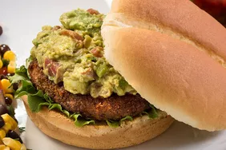

Guacamole
Ingredients:
- 3 ripe avocados
- 1 lime, juiced
- 1 teaspoon salt
- 1/2 cup diced onion
- 3 tablespoons chopped fresh cilantro
- 2 roma tomatoes, diced
- 1 teaspoon minced garlic
- 1 pinch ground cayenne pepper (optional)
Instructions:
- In a medium bowl, mash together the avocados, lime juice, and salt.
- Mix in onion, cilantro, tomatoes, and garlic.
- If desired, stir in cayenne pepper for a bit of heat.
- Refrigerate 1 hour for best flavor, or serve immediately.